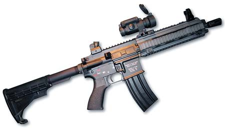
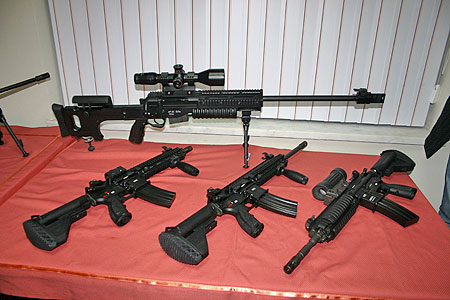
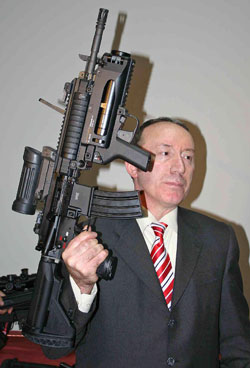
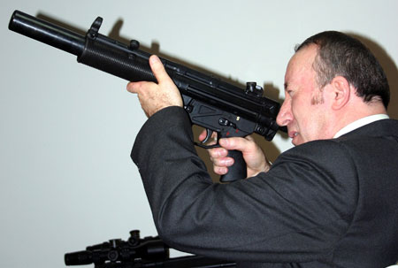
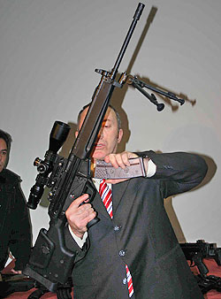
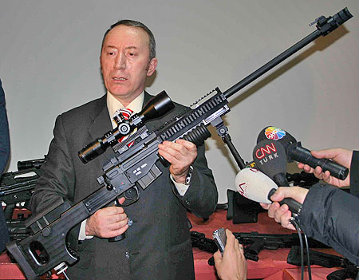
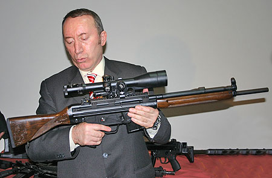
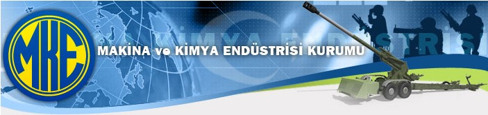

Haberler
> 02-04-2008 > MKEK, bilgisayar destekli tasarým teknolojileri kullanarak yeni nesil tüfek modelleri geliþtiriyor:
Mehmetçiðe, terörle mücadelede güç katacak süper tüfekler geliyor. Makine Kimya Endüstrisi Kurumu (MKEK) Genel Müdürlüðü'nce Silahlý Kuvvetler'in ihtiyacý doðrultusunda projelendirilen ve "Mehmetçik-1" adý verilen yarý otomatik tüfek üretimine yönelik çalýþmalarda son aþamaya gelindi.

3 kilo 600 gram aðýrlýðýnda, etkili menzili 500 metre, dürbün kullanýcýya göre 5 kat büyütmeli, dipçik kilitlemeli mekanizmaya sahip Mehmetçik-1 piyade tüfeðinin ilk prototipi yapýldý. Tüfekler test edildikten sonra seri üretime yönelik süreç baþlatýlacak.
Yeni model tüfek üretimine yönelik MKEK'te baþlatýlan yeniden yapýlanma çalýþmalarý kapsamýnda da silah fabrikasýnda tamamýyla bilgisayar destekli tasarým ve üretime yönelik kurum bünyesinde de bir araþtýrma-geliþtirme biriminin kurulduðu belirtildi.
Yakýn muharebe ve hücre baskýnlarýnda kullanýlmak üzere lazer takýlabilme özelliðine de sahip olan Mehmetçik-1'in mevcut G3 piyade tüfeklerine karþý önemli avantajlarý bulunuyor. Tesirli menzili 500 metre. Yiv ve setlerinden dolayý daha güçlü ve öldürücü olma avantajý bulunan bu tüfeklerin isabet oraný daha yüksek.
Türkiye ayrýca üretimini geçekleþtireceði bu tip silahlarla yerli üretim kabiliyeti de kazanmýþ olacak. TSK envanterinde geçmiþteki hafif silahlar, piyade tüfekleri, yabancý tasarým birtakým silahlar Türkiye'de lisans temini yoluyla üretilirken, bu kabiliyetin kazanýlmasý ile söz konusu silah türünün tasarýmý tamamen Türkiye'ye ait olacak...
Mehmetçik-1'i ilk defa 5 Ocak 2008'de basýna tanýtýldý:
MKE'de tanýtýlan Mehmetçik-1'in aðýrlýðý 3 kilo 600 gram, etkili menzili 500 metre.
Milli Savunma Bakaný Vecdi Gönül, Kýrýkkale'deki MKE fabrikalarýnda incelemelerde bulunarak, burada üretilen piyade tüfeði Mehmetçik-1, makineli tüfek ve keskin niþancý tüfeði tanýtýmýna katýldý.

Vecdi Gönül, MKE'nin son yýllarda geliþme gösterdiðini belirterek, MKE'ye, Türkiye tarihinde ilk kez özgün bir piyade tüfeði, makineli tüfek ve keskin niþancý tüfeði yapma görevi verildiðini hatýrlattý.
3 kilo 600 gram aðýrlýðýnda, etkili menzili 500 metre, dürbün ve kullanýcýya göre 5 kat büyütmeli dipçik, kilitlemeli mekanizmaya sahip Mehmetçik-1'in piyade tüfeði olarak prototipi yapýldý.
Mehmetçik-1'in yakýn muharebe ve hücre baskýnlarýnda kullanýlmak üzere lazer takýlabilen 3 kilogram aðýrlýðýndaki versiyonu da bulunuyor. Mehmetçik-1'in test edildikten sonra seri üretimine baþlanacaðý aktarýldý.





MKEK yeniden yapýlanma faaliyetleri:

MKE, 1950 yýlýndaki kuruluþundan itibaren ekonomik yaþamdaki geliþmeler paralelinde önemli yapýsal deðiþimler geçirmiþtir...
Ýlk olarak kuruluþ esnasýndaki fabrika döneminde, bütün üretim birimleri fabrika statüsünde yapýlandýrýlmýþtýr. Ayrýca bu dönemde, Kurumun özellikle askeri alandaki yatýrýmlarýna devlet katkýsý vardýr. Askeri sektörde, görev kuruluþu olarak tanýmlanmýþ, sivil sektörde ise ticari vasýflara sahip olduðu belirtilmiþtir. Kurumun fabrika sayýsý bu dönemde 25'e kadar çýkmýþtýr...
Nisan 2005 den itibaren Milli Savunma Bakanlýðý koordinatörlüðünde; MKE Kurumu'nun daha etkin, verimli ve uluslararasý pazarda rekabet edebilecek çaðdaþ bir yapýya kavuþmasý için baþlatýlan çalýþmalarý þu þekilde sýralayabiliriz
Askeri tesis ve hatlarýn elde tutulmasý ve modernize edilmesi,
Emek yoðun yerine teknoloji yoðun çalýþýlmasý,
Ar-Ge ve Ür-Ge çalýþmalarýna yeni bir organizasyon ve pazar/proje odaklý ürün geliþtirecek þekilde aðýrlýk verilmesi,
Fabrikalarda silah sistemi ve mühimmatýn ana üretim ve yeteneðinin elde bulundurulmasý, ancak diðer parçalar için alt yüklenici olarak ülke sanayicisinin daha çok kullanýlmasý (outsourcing) ve ülke sanayisi ile entegrasyon saðlanmasý,
Türkiye'nin neresinde olursa olsun var olan bir tesis, tezgâh ve yetenek için tekrar yatýrým yapýlmamasý,
Pazarlama ve tanýtýma yurt içi ve dýþýnda önem verilmesi,
Askeri hat ve tesislerde boþ iþçilik ve kapasite olduðunda sivil ürünler de üreterek ülke ekonomisine katký saðlanmasý ve verimliliðin artýrýlmasý,
Toplam Kalite Yönetimi
Yeniden yapýlanma faaliyetleriyle birlikte Ar-Ge ve Ür-Ge'ye önem verilmiþ ve bu kapsamda;
Mühimmat Fabrikasý'nda modern anlamda 155 mm Uzun Menzilli Topçu Mühimmatý için Ar-Ge Proje Ofisi oluþturulmuþ, mühimmatýn yerli tasarým ve üretimi gerçekleþtirilmiþ, ilk prototip Tahrip ve Kargo Mühimmatlarýnýn 25-27 Eylül 2006 tarihlerinde Karapýnar/Konya'da yapýlan ikinci atýþlarýnda 43.750 m menzil yakalanmýþtýr.
Silah Fabrikasý'nda tamamen bilgisayar destekli tasarým ve üretim yapabilen bir Ar-Ge birimi oluþturulmuþ, 7,62 mm. ve 5,56 mm. Piyade Tüfeklerinin 3 adet geliþtirilmiþ modeli ile biri yarý otomatik, diðeri tek atýþlý iki adet Sniper Tüfeði üretilmiþtir.
Bu çalýþmalarýn sonunda Kara Kuvvetleri Komutanlýðý tarafýndan yeni bir model Piyade Tüfeði tanýmlanarak Ar-Ge projesi olarak Kuruma verilmiþ, Milli Savunma Bakanlýðý ile birlikte çalýþma baþlatýlmýþtýr